How to manage Deduplication
The Deduplication section of the menu on the left gives you three options:
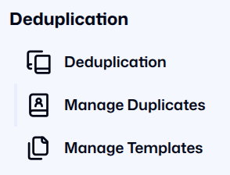
- Deduplication. This menu option will take you to a page where you upload your data and check for potential duplicates.
- Manage Duplicates. This menu option will take you to a page where you check and confirm potential duplicates.
- Manage Templates. This menu option will take you to a page where you can create a template that will enable you to upload your data.
Prerequisite: Deduplication Rules
Before you start, your organisation must establish Rules for checking duplicates. If you want to know what rules are being used, ask your administrator.
Deduplication
This page displays who uploaded data, the filename, the number of duplicates in those files, and the timestamps for when the deduplication records were created and updated.
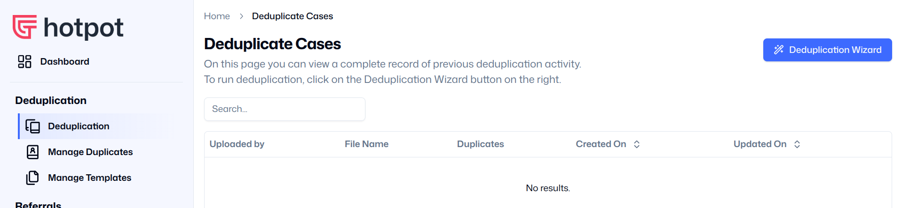
In the top right corner, you see a blue button which activates the Deduplication Wizard. Click on this button and the Wizard will guide you through the deduplication process.
The Deduplication Wizard
The Deduplication Wizard will take you through three steps. You must complete each step to complete the deduplication process.
Step 1: File Upload
The deduplication wizard can automatically “translate” the fields from your organisation’s dataset into the standardised fields used by the platform.
In order to do this it uses a Template. Your organisation can set up one or more Templates which will act as the translation layer for your data.
This enables your organisation to use the platform without you changing any of your internal systems, making it easier to share data with others.
The Deduplication Wizard starts by asking you to select the relevant Template. Use the dropdown menu to select the Template set up by your organisation.
If you do not select a Template, the Wizard displays a message stating that a Template is required. You cannot continue until you select a Template.
If you do not see your Template in the dropdown menu, you can either contact your organisation administrator and ask them to create one, or create a Template yourself.
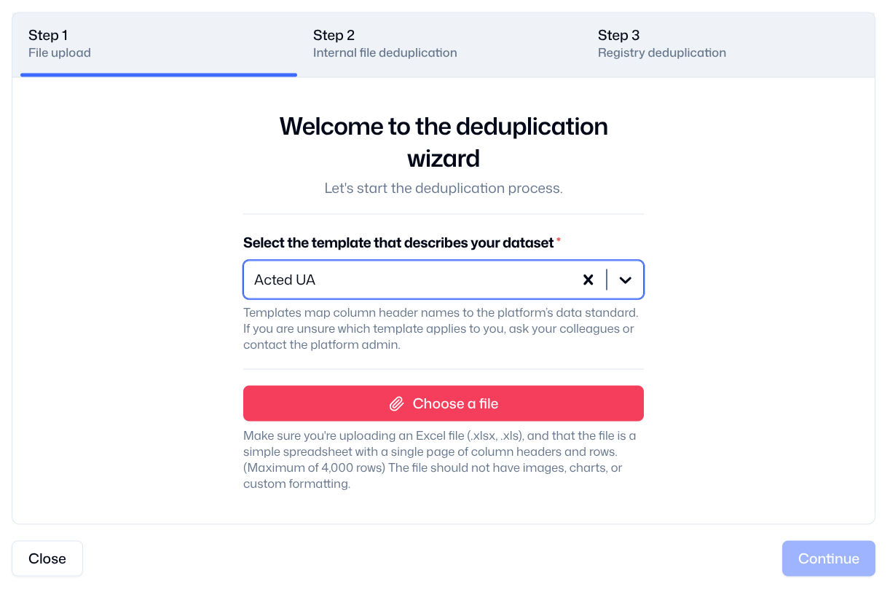
Once you have selected a Template, you can choose a file to deduplicate.
- Click Choose a file to open your device's upload prompt.
- Select a file from your device or cloud storage. (If you select the wrong file, click Remove and select another).
- Click Continue to go to the next stage.
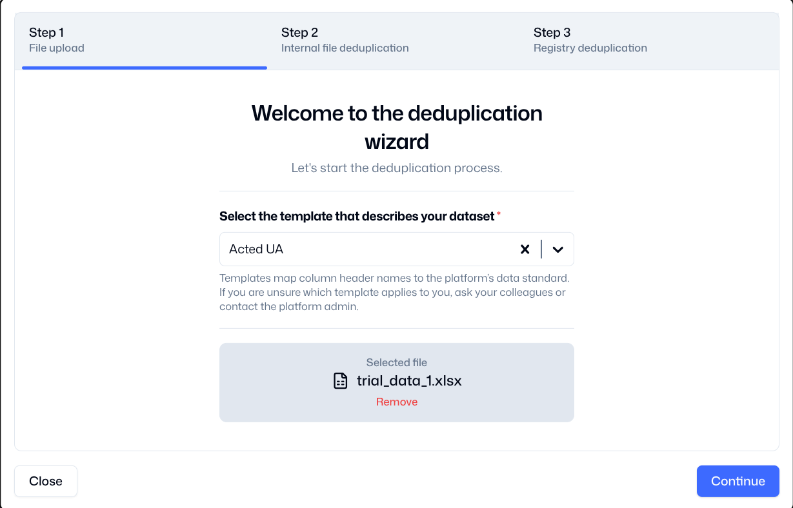
Step 2: Internal File Deduplication
Your organisation may already have deduplicated your internal records, but the Wizard will check to see if there are any duplicate records within your uploaded file.
If there are duplicate records in your uploaded file, the Wizard states how many were found and provides an option to download an Excel file containing the duplicates.
- Click Download to save this file to your device.
- Open the file to check and edit the duplicates on your device.
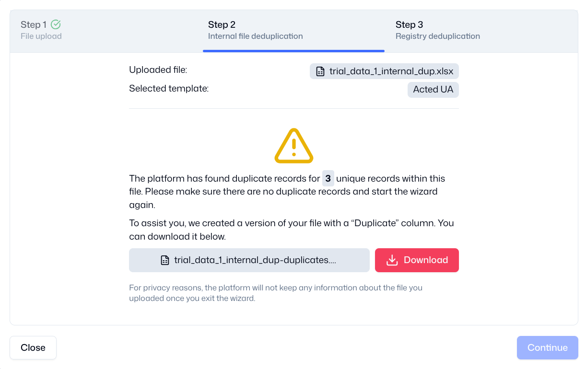
- Return to Step 1 of the Wizard and upload the corrected file.
Uploading a file with no duplicate records triggers a confirmation message.
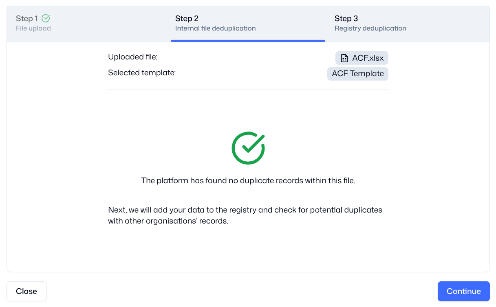
- Click Continue to proceed to the next step.
Step 3: Registry Deduplication
The Wizard will add your beneficiary data to the shared Registry, and check to see if your uploaded file has any potential duplicate records with the records already held in the Registry.
If your file did not contain any duplicates, the following screen appears. Click Finish to close the Wizard. You do not need to take any further action.
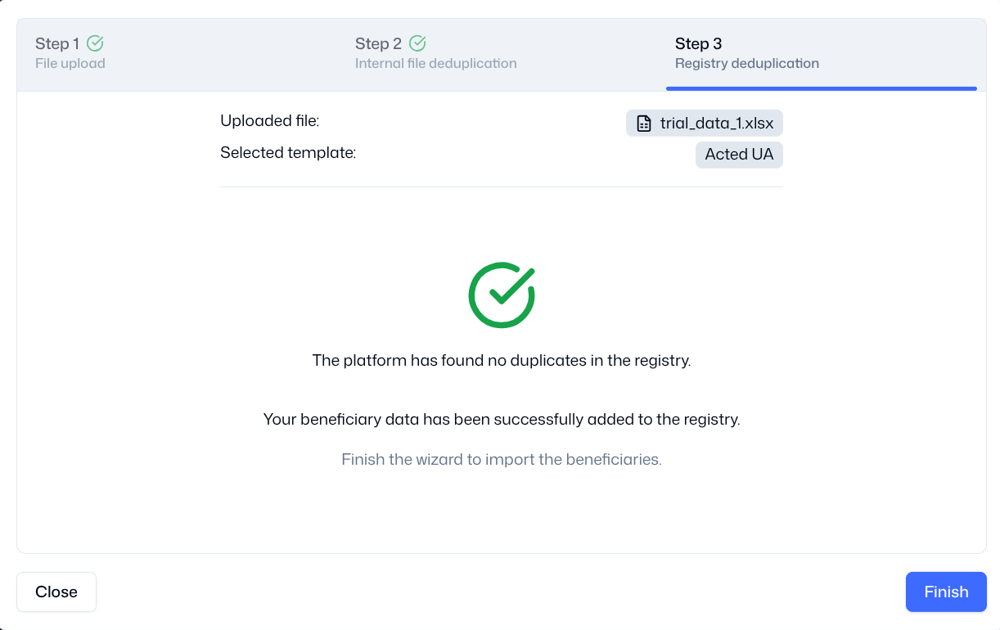
If your file contained duplicates, the following screen appears. Click Finish to close the Wizard, and then visit the “Manage Duplicates” page to view and manage the potential duplicates.
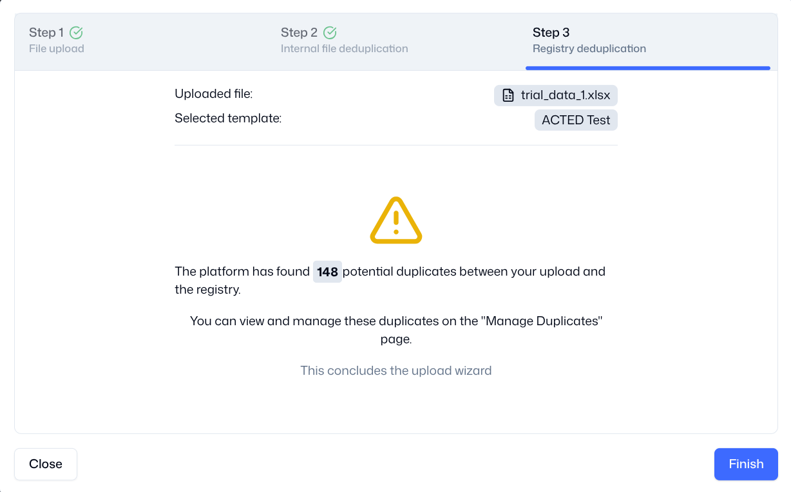
Manage Duplicates
On this page you can view and manage potential duplicates which you have uploaded. We always refer to “potential” duplicates because we cannot be sure if a record is a duplicate until we have confirmed it with our colleagues in other organisations.
The Unresolved tab will show you potential duplicates which you need to check. In order to ensure data minimization, the Registry only holds the data fields which the Data Steward has decided are necessary to check for duplicates, e.g. the data defined by specific Rules.
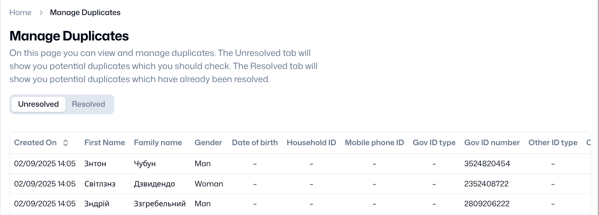
Click any row to open the Beneficiary Preview, which displays the details of the potential duplicate. The top of the page displays new information:
- The status of the duplicate (either unavailable, accepted, or rejected)
- The organisation which holds the primary record (i.e. the potential duplicate)
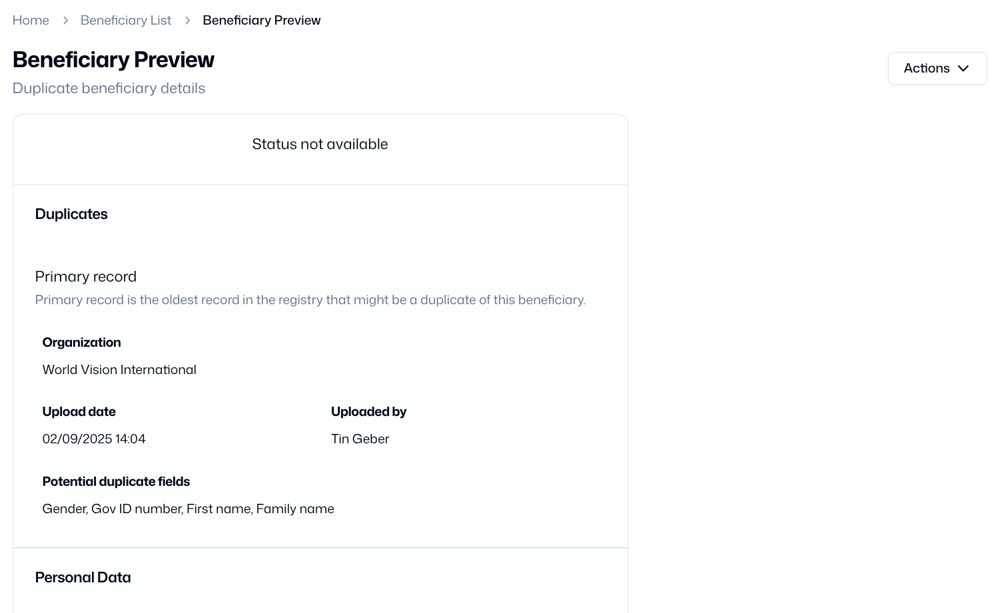
Under the primary record, the platform shows you the organisation which holds that record, the staff member who uploaded that record, when they uploaded it, and which fields are potential duplicates.
You can use this information to contact your colleague in the other organisation to discuss whether this is a real duplicate, and what action you will take. This is called the Adjudication Process, which needs to be agreed by all participants.
Once the Adjudication Process is complete, you can change the status of the potential duplicate using the “Actions” drop-down list in the top right corner of the Beneficiary Preview page.
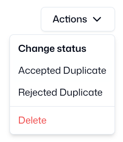
If the Adjudication Process is successful, and your reach agreement with your colleague, you can select one of these options.
- Accepted Duplicate. You confirm with your colleague that this is a duplicate record, but both your organisations will continue to work with this beneficiary or household (perhaps because you are delivering different modalities of assistance).
- Rejected Duplicate. You confirm with your colleague that this is not a duplicate record, and so your organisation will become the primary record holder in the Registry.
- Delete. You confirm with your colleague that this is a duplicate record, and your organisation will no longer work with this beneficiary or household. You can delete the record from the Registry, although you may decide to keep your internal records.
If you change the status of the record to “Accepted Duplicate” or “Rejected Duplicate”, the platform will move it from the “Unresolved” tab to the “Resolved” tab. You will be able to view this record when you switch views to that tab.
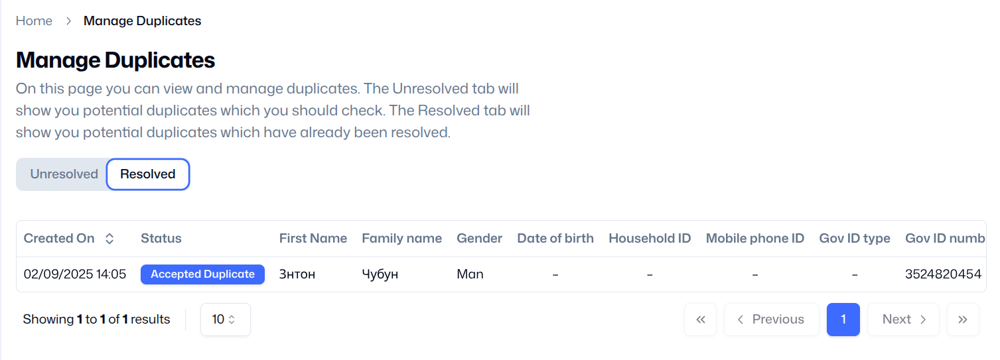
The Adjudication Process
The Adjudication Process happens off-platform, and it usually requires discussion between partner organisations. The process must be agreed by all members of the Data Steward. This is an example of an Adjudication Process which you can adapt.
- The organisation which uploads an individual record first is considered to be the Primary record holder.
- If another organisation uploads a record which is a potential duplicate of the Primary record, they are a Secondary record holder.
- The Secondary record holder should contact the Primary record holder to discuss the potential duplicate.
- Adjudication is the process of comparing the Primary record to the Secondary record, and deciding jointly if they are duplicates or not.
- There are three possible options at the end of the process:
- The potential duplicate is - Not a Duplicate! Sometimes staff make a mistake in entering data, the platform makes a mistake in flagging a record, or there are simply two individuals who have similar personal information.
- The potential duplicate is a duplicate, but Unclear. If there is not enough information to decide, the record can remain flagged as a potential duplicate in the registry. This option is not preferable, and you should look for more information to make a decision!
Mediation
Should the parties involved not arrive at a consensus during Adjudication, three members of the Oversight Committee will be invited to mediate discussions within one week.
Manage Templates
If you click on “Manage Templates”, the platform will take you to the Templates Page.
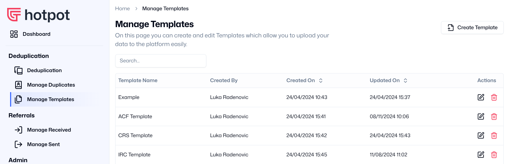
Most deduplication platforms require you to upload your data in a specific format. This means that you have to spend time setting up your internal systems to output that format, or manually updating your spreadsheets to fit that format.
Templates enable the platform to “translate” your spreadsheet into a common format which enables data sharing. It does this by mapping the header labels from your spreadsheet to the labels in the registry (the shared database).
Each organisation can set up its own template, and it’s possible to set up multiple templates if you need to upload data from different sources.
- Click Create Template in the top right to open the "Create new template" box.
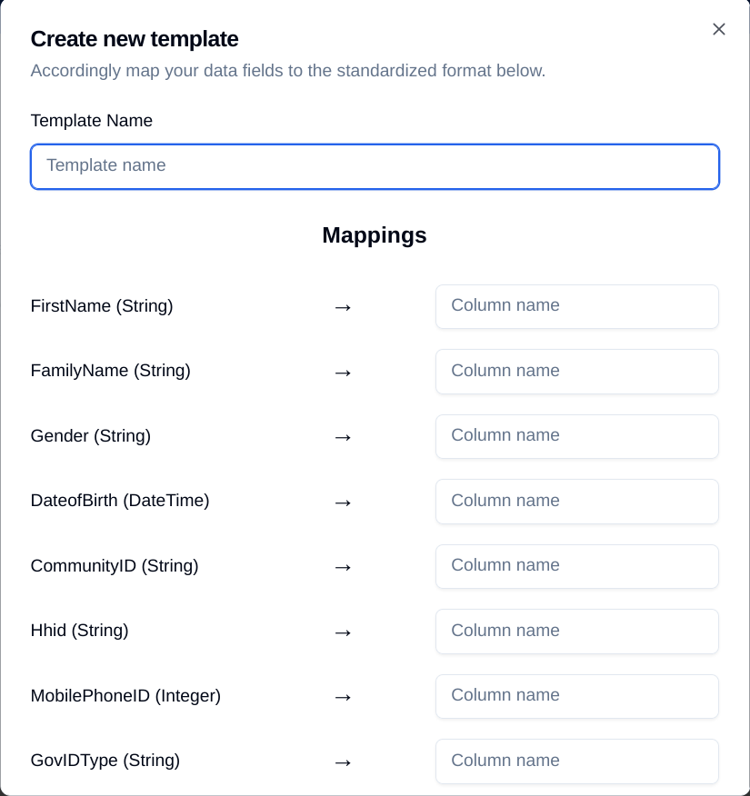
- Enter a simple descriptive name for your template.
- Check the labels on the left, and enter your organisation’s spreadsheet column headers into the corresponding “Column name” boxes on the right. For example:
- If your spreadsheet uses “Last Name”, type “Last Name” next to “FamilyName”.
- If your spreadsheet uses “Date of Birth”, type “Date of Birth” next to “DateofBirth”.
You only need to enter the Column names which are needed for deduplication. These labels should have been collectively agreed by all the partners. If you are not sure which labels are being used, ask your focal point or a partner colleague.
- Click Create template to save.
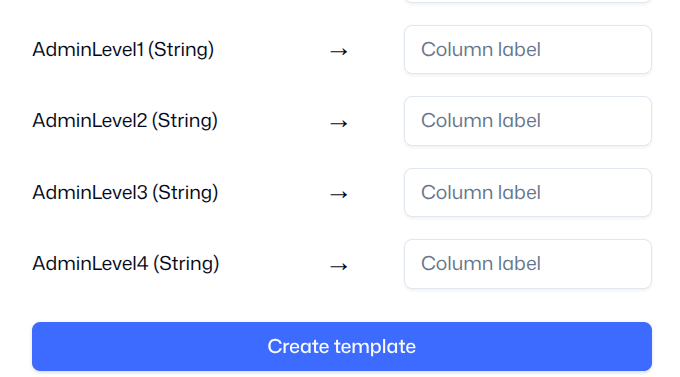
Clicking on the name of any Template in the list will take you to the “Template Edit/Preview” page. On this page you can view the Template details, update the mapping and change the name of the Template if you need to.
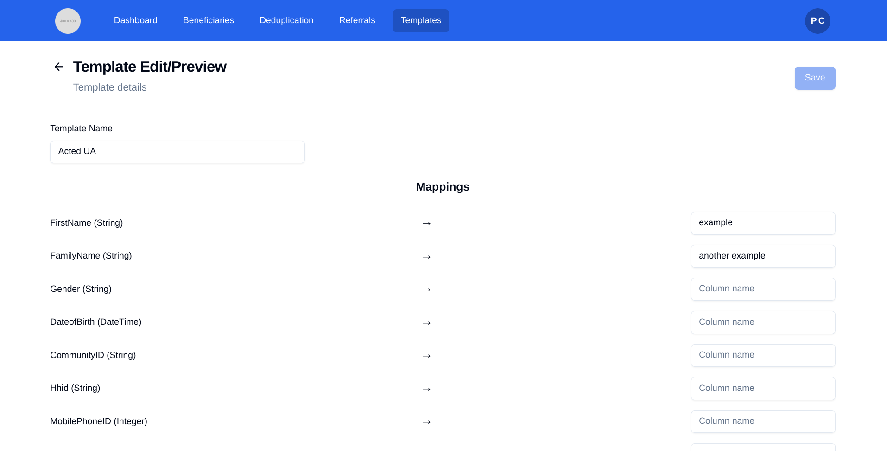